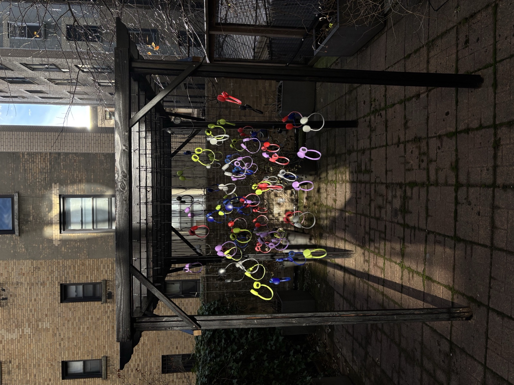

While reading George Saunders's A Swim in a Pond in the Rain, I was struck by his idea that we only hear what we want to hear and read what we want to read. Immediately, I recalled conversations I had, trying to remember if I consciously neglected what the other person said. I wanted to address the question of whether we listen to each other.
I created a "listening forest," a pavilion that overwhelmingly addresses the visual language of listening. We are so consumed by our media nowadays that headphones seem more symbolic of listening than ears do. The idea of having to walk through a forest of listening devices alone was to make people conscious of their body language, of their own ability to listen.
The process was tedious yet surprisingly peaceful, and it was an activity of internal active listening. The sound of the drill or the saw was often overwhelmingly loud and persistent, and left me unable to verbally express myself. Building my ode to the art of listening, I realized the power of listening first and reacting later instead of preparing my response while listening.
I only hope that the visual and spatial impact of the work can allow people to address their inner and outer voice.